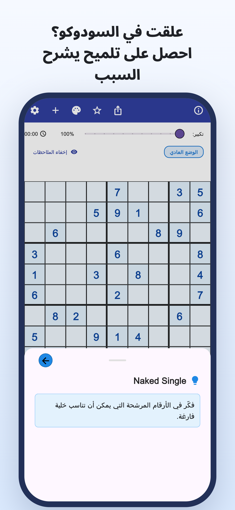
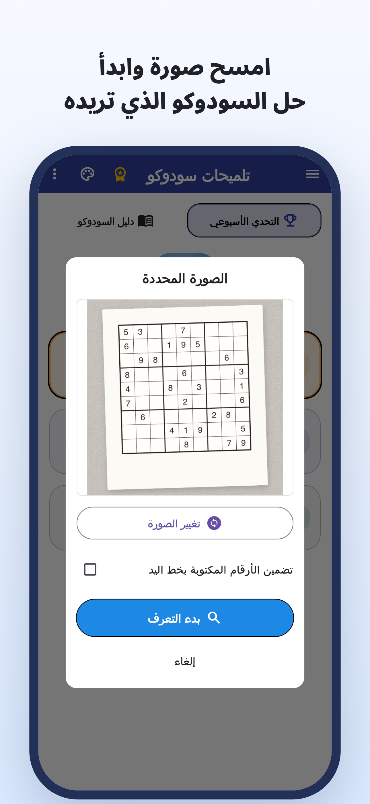
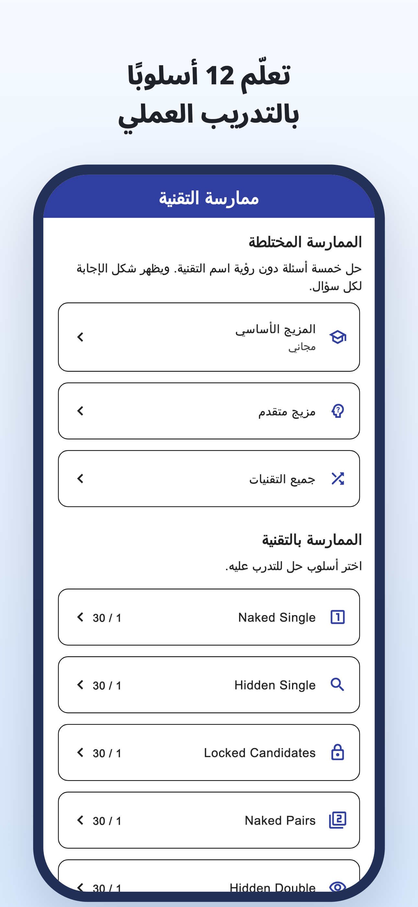
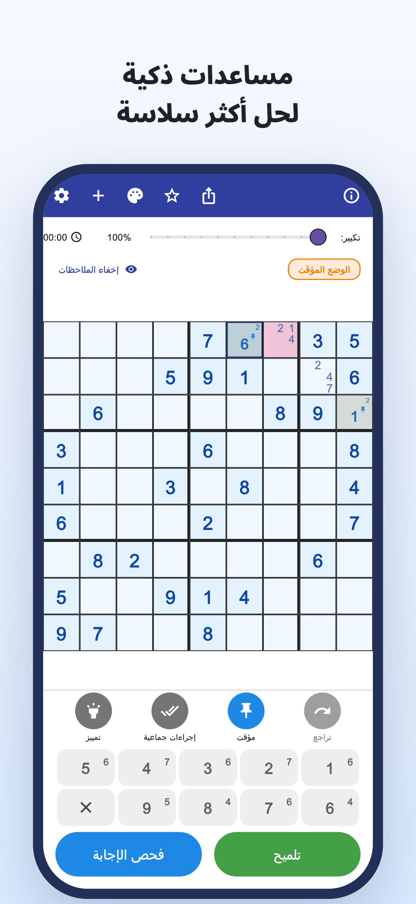
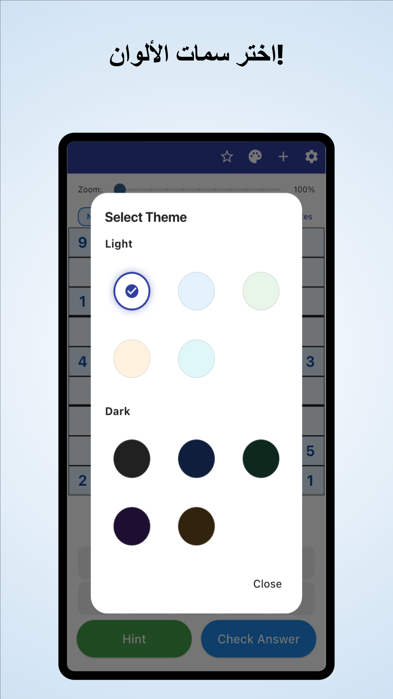

«أين ينبغي أن أبحث الآن؟»
تراجع الشبكة مرارًا وتكرارًا،
لكنك تبقى عالقًا في الموضع نفسه.
امسح بالكاميرا · تلميحات مع الشرح
امسح ألغاز الصحف والمجلات بالكاميرا.
افهم سبب ملاءمة الرقم، ثم واصل الحل بنفسك.
iPhone وAndroid / تنزيل مجاني · مشتريات داخل التطبيق





هل يحدث لك هذا أثناء اللعب؟
تراجع الشبكة مرارًا وتكرارًا،
لكنك تبقى عالقًا في الموضع نفسه.
لماذا يجب وضع هذا الرقم هنا؟
نسخ الحل ليس كافيًا.
تريد نقل لغز الورق الذي تحله
ومتابعته في التطبيق.
حوّل موضع التعثر إلى دليل
اقرأ لغز سودوكو من صحيفة أو مجلة عبر صورة، وقلّل إدخال الأرقام يدويًا.
قراءة من صورةاقرأ منطق الخطوة واستخدمه للتفكير في الخطوة التالية، بدلًا من مجرد إدخال الإجابة.
تلميحات مع الشرحاستكشف شروح التقنيات وتمارينها، ثم تدرّب على اكتشافها بنفسك.
تدريب على التقنياتلمن يستمتع بالوصول إلى الحل بنفسه
استورد لغزك المعتاد وتابع من حيث توقفت.
افهم سبب الخطوة الصعبة، ثم تابع الحل بنفسك.
للمبتدئين ولكل من يريد تعلّم تقنية جديدة.
اقرأ · جرّب · تدرّب
ابدأ في المتصفح.
اقرأ دليلًا أو العب لغزًا كاملًا.
من ملاحظات المرشحين إلى شروح التقنيات والتدريب.
حاول إكمال لغز كامل مع التلميحات عند الحاجة.
اكتشف القواعد ومتعة الربط بين الأدلة.
انظر إلى الخانة ذات الإطار الأزرق وافتح التلميح.
تلميح للخطوة التالية
افحص مرشحي خلية فارغة.
هذا مثال ويب لتجربة خطوة واحدة. يختلف العرض في التطبيق.
عندما تتعثر في السودوكو.
نزّل تلميحات سودوكو
تنزيل مجاني · مشتريات داخل التطبيق
يمكن تنزيل التطبيق وتجربته مجانًا. توجد حدود لاستخدام التلميحات وفحص الإجابات وقراءة الصور؛ وتتطلب بعض الاستخدامات مشاهدة إعلان فيديو.
Premium اشتراك شهري أو سنوي يزيل الإعلانات ويتيح تلميحات وفحص إجابات بلا حدود. تبقى قراءة الصور محدودة حتى مع Premium. راجع الأسعار والشروط داخل التطبيق.
استورد صورة للغز السودوكو. تحقّق من الأرقام المقروءة وصحّح الأخطاء قبل البدء. يدعم التطبيق السودوكو التقليدي بحجم 9×9.
يمكنك لعب الألغاز المضمنة واستخدام شروح التقنيات وتمارينها. تتطلب بعض الألغاز والتمارين Premium.
إلى جانب عرض الخطوة الواحدة هنا، يمكنك لعب لغز كامل في المتصفح واستكشاف أدلة التقنيات وتمارينها.
دليل السودوكو